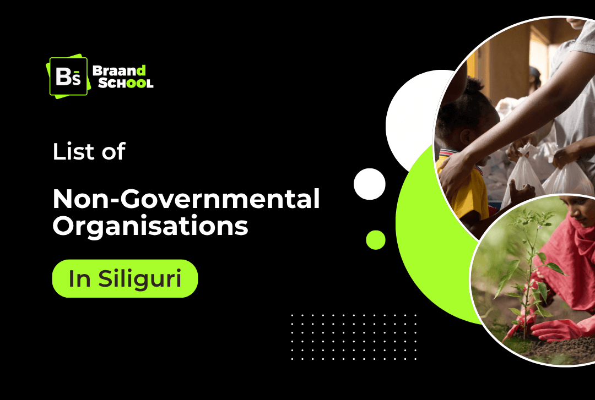
Behind every social issue, be it poverty, lack of education, gender inequality, or animal neglect, there are people and organizations working consistently to bring change. These Non-Governmental Organizations bridge the gap where government programs and policies can’t always reach directly, especially at the grassroots level.
Even though West Bengal has over 27,000 registered NGOs (Niti Aayog, 2025), a large number of people are still struggling with poverty, illiteracy, gender based inequality, and lack of access to basic healthcare.
This blog brings together a list of NGOs in Siliguri that are genuinely active and making an impact where it matters most. Each organization on this list is doing meaningful work in various sectors like supporting children and women, protecting animals and preserving the environment.
UNIOF
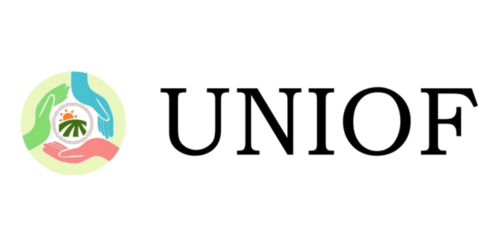
UNIOF is a global-reaching NGO with a strong local presence in Siliguri. They provide food, clothes, medical aid, animal care, and environmental services. UNIOF also supports education through scholarships and operates awareness campaigns across various sectors.
Established: 2013 (formerly Nabarun Sangha)
Motto: Empowering Lives, Creating Change
Target Groups: Children, women, youth, and marginalized communities
Activities: Awareness campaigns, education programs, vocational training, health initiatives
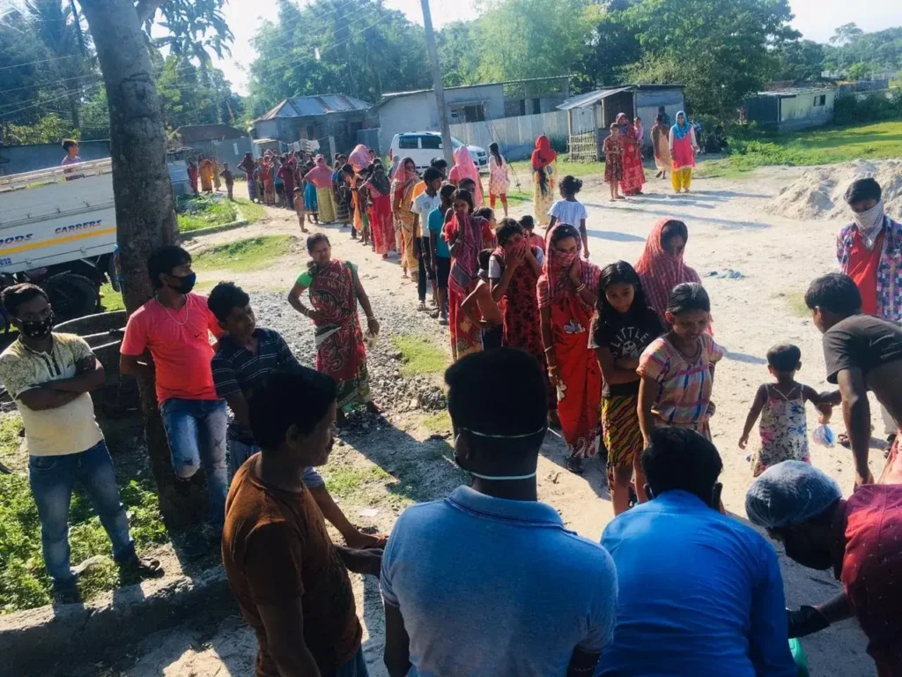
Key Campaigns:
- Knockdown Hunger: Over 30,000 meals served post-COVID
- Bastra Daan: 5,000+ clothes donated
- Uniof Vidya: Education scholarship for needy students
- Animal Help: Rescues, feeds, and treats stray animals
Address: 62, Radha Krishna Pally, Eastern Bypass Road, Siliguri – 735135
Contact: 7319572051 | help@uniof.org | Website
Save Earth for Life
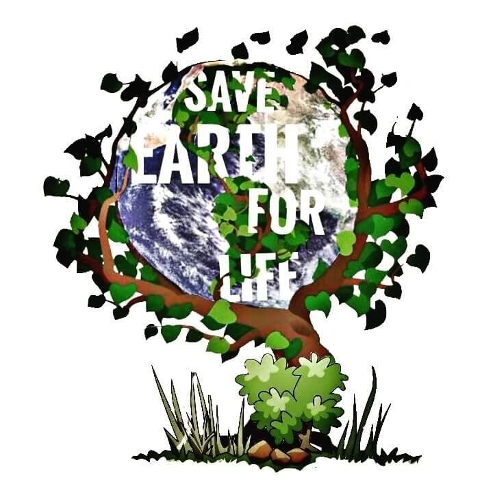
Save Earth for Life is a youth organisation working towards the upliftment and the amelioration of the environment. Through this NGO, students and volunteers from Siliguri and nearby cities and villages come together to work towards conserving the environment. They take initiatives like cleaning rivers, waste segregation, tree plantations, and collaborate with colleges and NSS units for awareness campaigns.
Established: 2019
Target Groups: General public, students, local communities
Activities: Tree plantation drives, waste management campaigns, eco-awareness programs

Key Projects:
- Cleanliness drives in forests and rivers (e.g., Rajpahari Bridge, Lepchakha)
- Plantation and awareness rallies
- Clothing and food distribution to the needy
Location: Ward 3, Pradhan Nagar, Siliguri
Contact: 09735119791 | saveearthforlife@gmail.com
Siliguri End Smile Social Welfare Society (SESSWS)
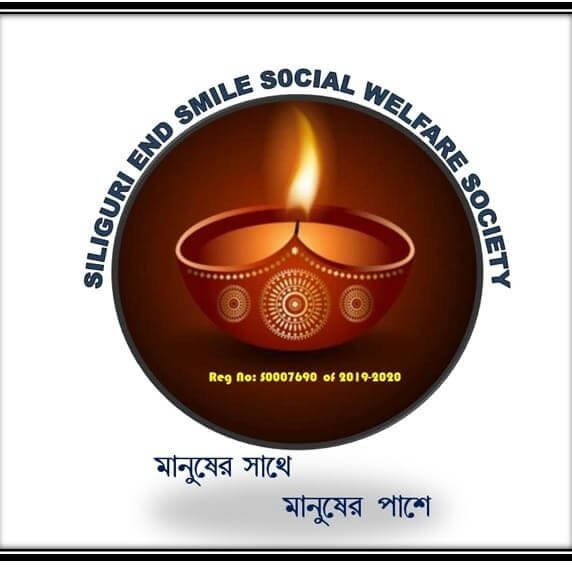
SESSWS dreams of a self-sufficient and discrimination-free society. This NGO works for various causes like education, rural development projects, food, health, and sports for the underprivileged communities in tribal tea estates.
Established: 2019
Target Groups: Elderly, disabled, underprivileged children
Activities: Health camps, community support, education aid, distribution drives
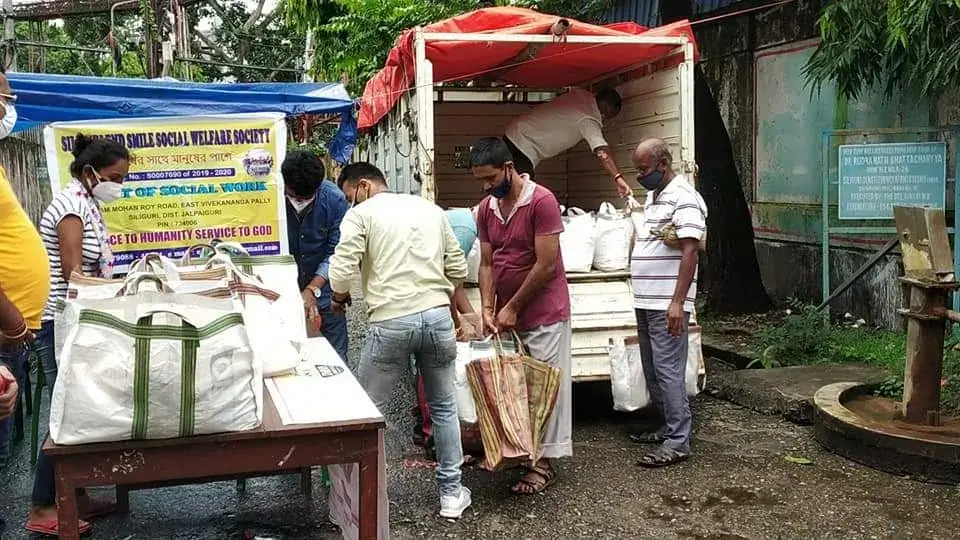
Key Projects:
- Literacy programs for working adolescents and tribal children
- Free tuition, book distributions
- Sports training centers for local children
- Rural infrastructure development and sanitation projects
Address: Raja Rammohan Roy Rd, East Vivekananda Pally, Siliguri
Contact: 07908846581 | endsmile04@gmail.com | Website
Siliguri Institute of Career Center (SICC)
SICC is a registered society focused on skill development and poverty alleviation. It organizes vocational training programs like tailoring, hospitality, and organic kitchen gardening, with the aim to help members of Self-Help Groups particularly in forest range areas like Belacoba.
Established: 2006
Registration No: S/IL/36399
Focus Areas: Art & Culture, Children, Education, Environment, Tribal Affairs, Vocational Training, Women’s Empowerment
Target Groups: Underprivileged youth, unemployed individuals, students
Activities: Skill training, career counseling, computer education, educational support
Key Campaigns:
- Trained over 1,500 SHG members from 2017–2021
- Conducted month-long skill development programs for forest dwellers
- Collaborated with WBSCL (West Bengal State Council of Labour) to create livelihood opportunities
Location: Chhayanot, East Vivekanandapally, Near Telephone Exchange, Sanghati More, Siliguri – 734006
Email: 123sicc@gmail.com
Siliguri Unique Social Welfare Society
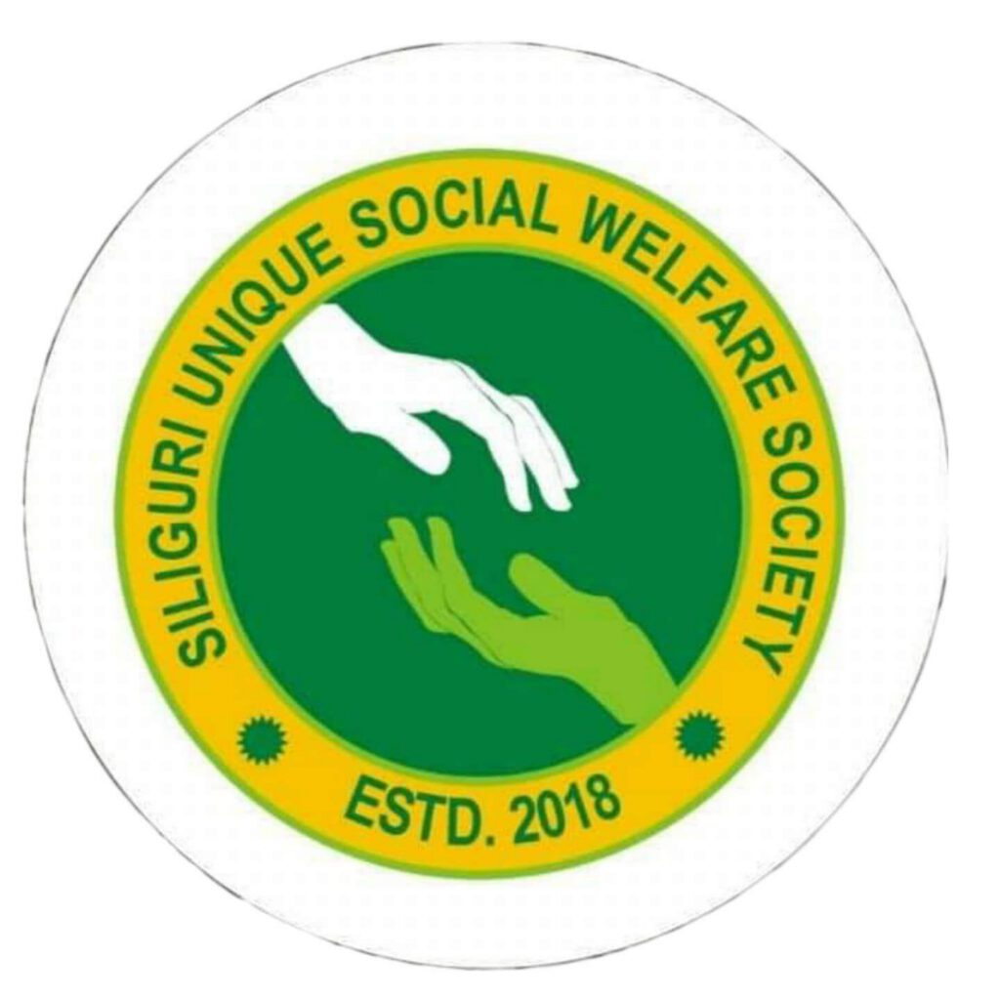
This NGO started with a mission to promote cleanliness and sanitation in Siliguri, but now its has also started working towards healthcare, food relief, and emergency support.
Established: 2018
Registration No: S0006466
Target Groups: women, children, and local communities
Activities: Awareness drives, clothes and sanitary distribution, emergency services
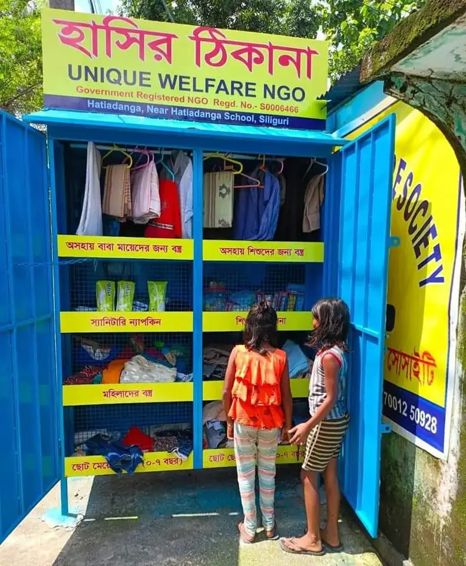
Key Initiatives:
- 2 Taka Ambulance Service: Low-cost emergency transport for needy patients
- Clothes and stationary donations
- 2 takay Vorpet Khabar: Just for a small amount of 2 ruppes, rickshaw pullers, cart drivers, and homeless people can now get a full meal.
- 2 Taka Patshala: This initiative has been taken to make sure every child gets a chance to learn and grow.
Address: Opposite Hatiadanga High School, Eastern Bypass, Siliguri
Phone: 08768884703
Helping Hands Relief Foundation
This non-governmental organisation works towards community development through initiatives in the field of education, healthcare, youth development, and gender empowerment.
Established: 2015
Registration ID: S/2L/44024
Target Groups: underprivileged families, community
Activities: Relief kits, livelihood aid, educational materials
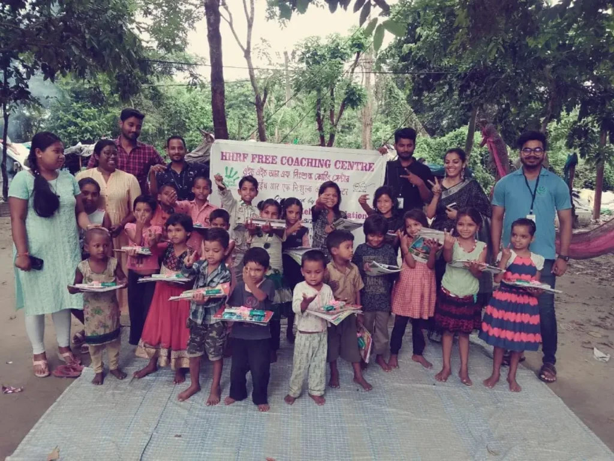
Key Initiatives:
- Provided scholarships to 10 underprivileged children
- Distributed education kits and organized tree plantations in schools
- Financial support for cancer patients
- Opened Vidyamarg, a community library in Fulbari for students and entrepreneurs
Location: Guru Saday Dutta Rd, Dabgram, Siliguri
Contact: 08537031038 | helpinghandsrelief2015@gmail.com
Siliguri Subhaspally Welfare Organisation
Subhaspally Welfare Organisation supports underprivileged families with clothing and stationary. They also provide clothes and celebrating cultural events with inclusiveness.
Established: 2002
Registration No: S/IL/7315
Target Groups: Low-income families, elderly, and children
Activities: Health checkups, clothes distribution, school supplies

Initiatives:
- Vocational Training for women ((handicraft, sewing and knitting)
- Distribution of clothes, blankets, and books
- Health awareness campaigns
- Free Eye Checkups
Address: Orchid Apartment, Ward 10, Siliguri
Contact: 0353 6589233 | sswoslg@yahoo.in
Robin Hood Army – Siliguri Chapter
Robin Hood Army is an all-India level volunteer movement that redistributes surplus food from restaurants to those in need. In Siliguri also, they are working actively in organizing food drives, promoting education, and community outreach.
Target Groups: Homeless, slum dwellers, hungry individuals
Activities: Food distribution
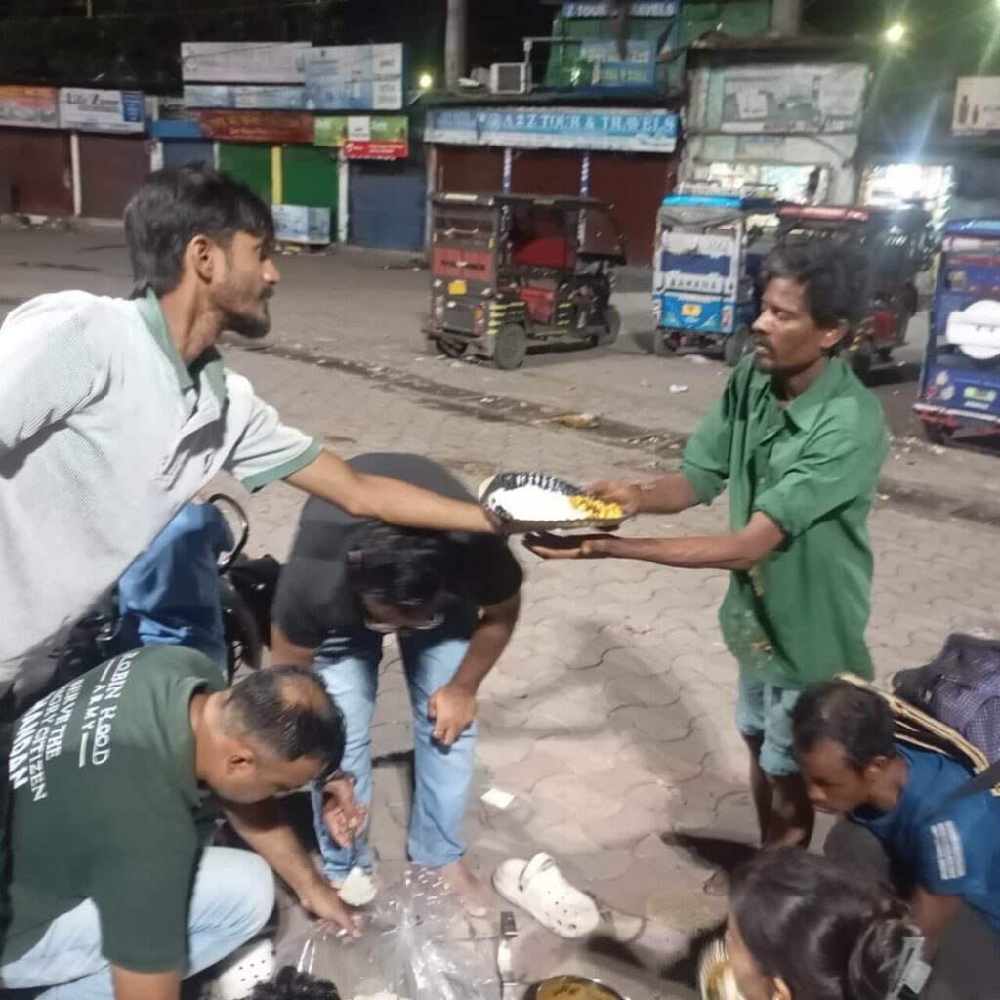
Key Initiatives
Distributing surplus food from the restaurants to homeless families, orphanages, patients from public hospitals, and old age homes
Contact: 8971966164 | Website
Nirvana Animal Welfare (A unit of Purvaja Foundation)
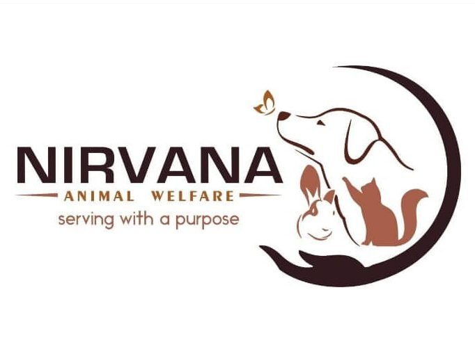
This NGO is a unit of Purvaja Foundation, working for animal rescue, adoption, and welfare. Nirvana conducts vaccination drives, raises awareness about animal abuse, and takes donations for surgeries and treatments. They are vocal about animal rights and promote adoption through social media.
Registration No: S/1L/20003
Target Groups: Stray animals, pet owners, animal lovers
Activities: Animal rescue, anti-rabies vaccination, sterilization and injured animals treatment
Address: Vidyapith Road, Deshbandhu Para, Siliguri
Contact: 9735127898 | nirvanaanimalwelfare@gmail.com
Siliguri Divine Touch Welfare Organisation
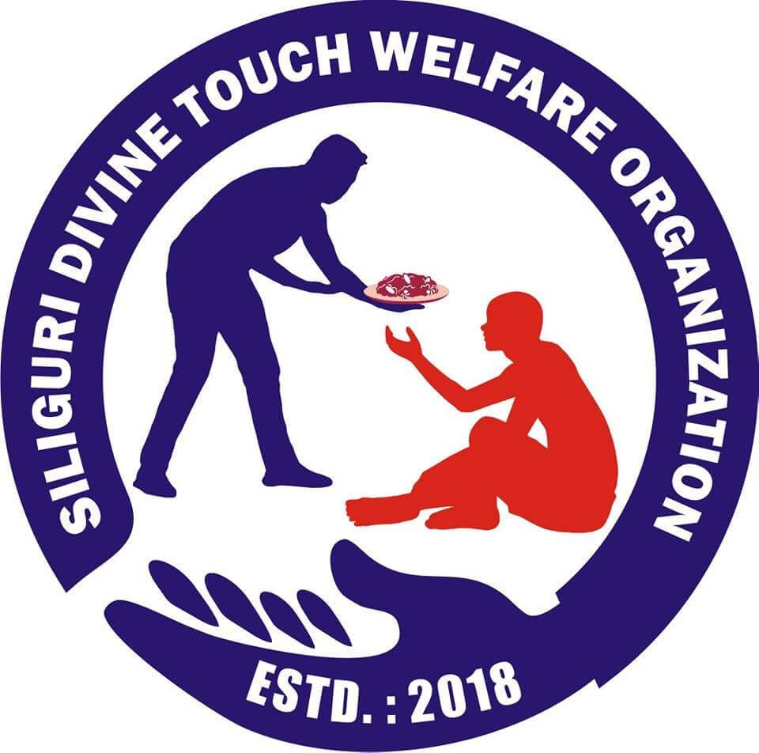
With a mission to make basic necessities accessible to all, Divine Touch focuses on food and clothes distribution and environmental efforts like free plant distribution and plantation drives. This NGO provides assistance to children with special needs and promotes inclusive education. They also engage in relief distribution during emergencies and festivals.
Established: 2018
Target Groups: Special needs children, low-income families
Activities: Special education support, food distribution, relief aid

Address: ITI Road, Shastri Nagar, Siliguri
Contact: 9933388886 | siliguridivinetouch.ngo@gmail.com
Himalayan Nature and Adventure Foundation
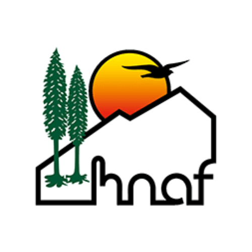
This NGO is dedicated to conserve biodiversity and promote sustainable development in the Eastern Himalayas. They also conduct awareness campaigns on climate change, support eco-tourism, and engage youth in environmental education.
Established: 1989
Target Groups: Students, nature lovers, Himalayan communities
Activities: Climate education, biodiversity research, eco-tourism promotion, conservation projects
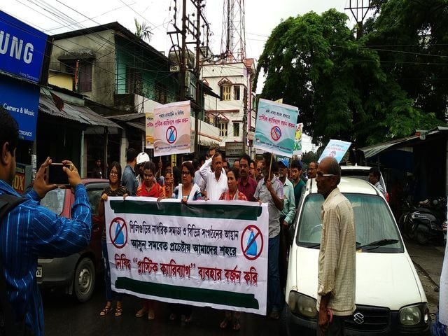
Key Focus Areas:
- Biodiversity Conservation in the Eastern Himalayas
- Environmental Education for students, communities, and stakeholders
- Sustainable Ecotourism and Adventure Activities
- Community-based Initiatives in rural areas for livelihood and environmental protection
Address: 28, Ward 32, Prannath Pandit Road, Siliguri – 734006, West Bengal
Contact: 9434083666 | hnafngo@gmail.com | Website
These NGOs are working daily and consistently to bring positive changes, even if it’s small, in the lives of people. Their hard work and passion is proof that real change can start with helping on a small scale. If you’re someone who wants to help or get involved, you may reach out to them or consider volunteering in Siliguri. And remember, even small acts of kindness can make a huge difference.